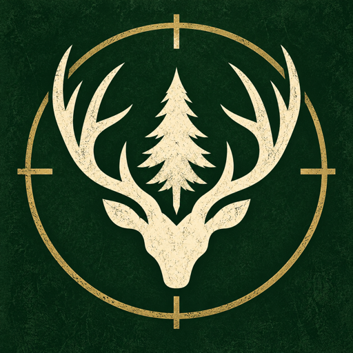

Play online
No installation.
Step straight into the reserve.

WILDLINEThe wilderness is waiting
Your station. Your rifle.
A whole wilderness ahead.
Beyond the cabin door
Take the truck out from your forest station and follow the trail into Northreach. Find your mark, steady your aim, and bring your harvest home.
What begins with a first hunt becomes a journey through moonlit ambushes, baited clearings and a final watchtower challenge. Earn your equipment. Learn the reserve.
01 / The official trailer
A glimpse of the wilderness.
An invitation to explore it.
02 / Inside the expedition
From the cabin to the clearing.
Watch Northreach in action.
A glimpse of Northreach
The expedition journal
Ten jobs. Unlocked one hunt at a time.
Your next expedition starts here
Play in your browser, or take Northreach offline.
No installation.
Step straight into the reserve.
The standalone expedition.
Apple silicon & Intel Macs.
Unpack. Open. Explore.
Keep all extracted files together.
Play in your browser or pick up a desktop edition.
Desktop builds are unsigned and may trigger a security warning. Please allow the application to run if prompted by your operating system.
Progress is saved on your device. Browser and desktop saves are separate.